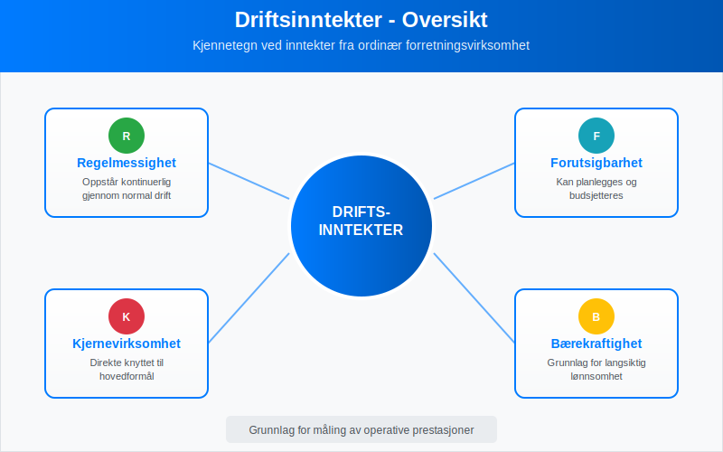
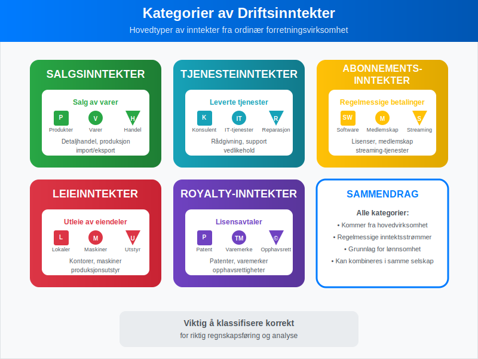
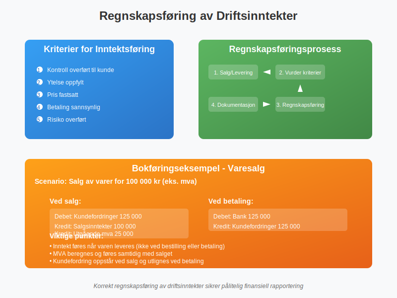
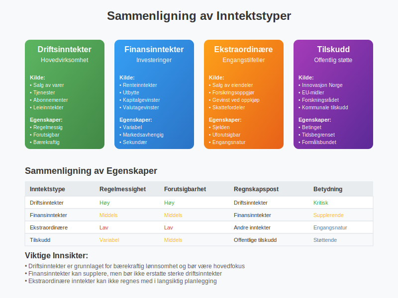
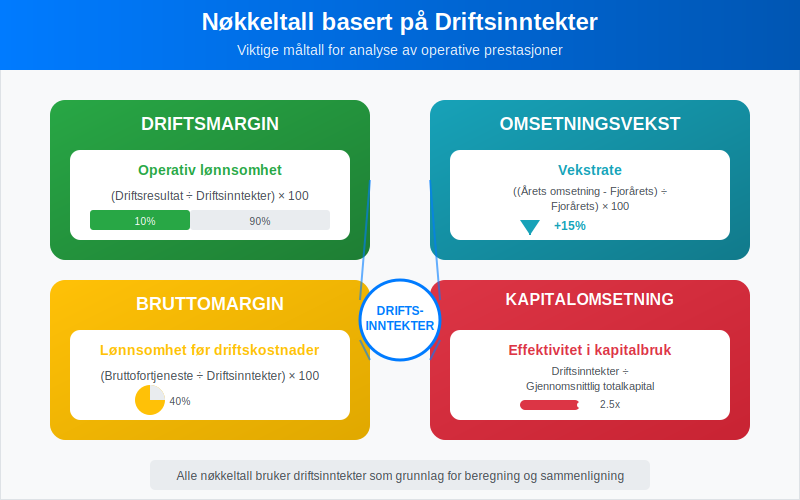
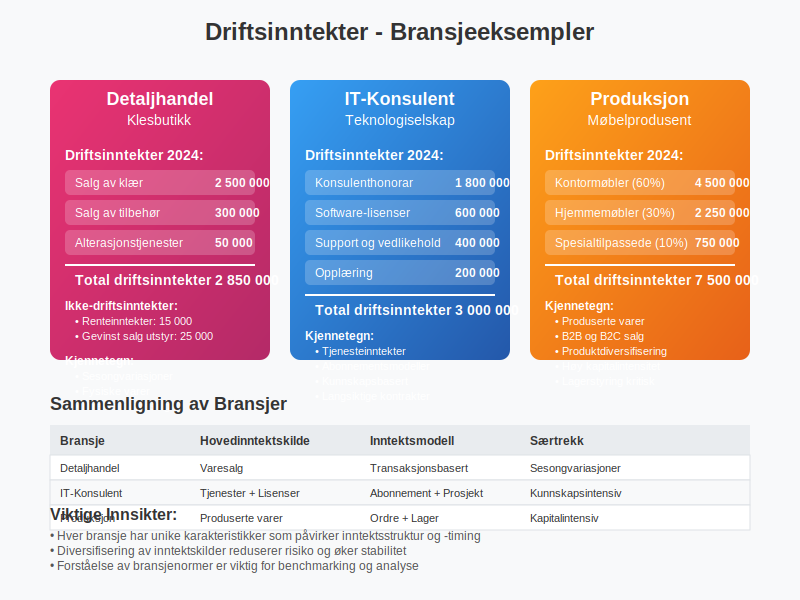
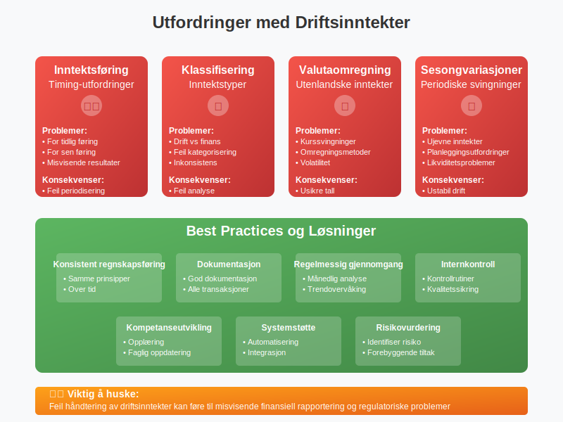
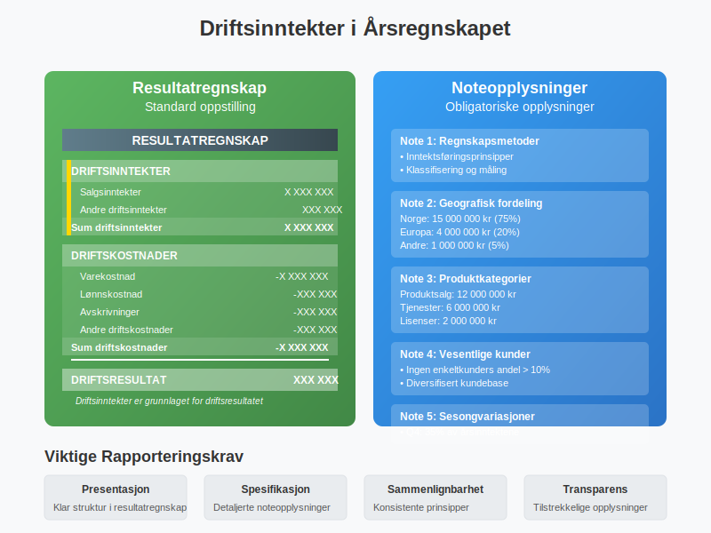
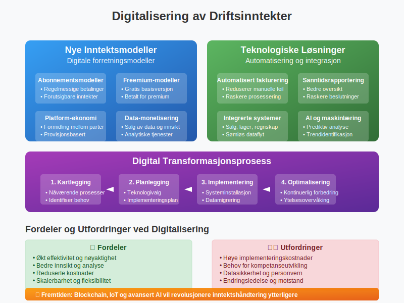

Driftsinntekter er inntekter som oppstår fra et selskaps ordinære forretningsvirksomhet og utgjør grunnlaget for å måle selskapets operative lønnsomhet. Som en viktig del av selskapets totale inntekter, skiller driftsinntekter seg fra Finansinntekter som kommer fra investeringer og finansielle aktiviteter, ved at de representerer verdien av varer og tjenester som selskapet leverer til sine kunder. Driftsinntekter utgjør hovedkomponenten i selskapets omsetning, men måles eksklusive merverdiavgift.
Definisjon og Betydning av Driftsinntekter
Driftsinntekter er alle inntekter som genereres gjennom selskapets hovedvirksomhet og normale forretningsdrift. Disse inntektene er avgjørende for å vurdere selskapets evne til å skape verdi gjennom sin kjernevirksomhet.

Kjennetegn ved Driftsinntekter:
- Regelmessighet: Oppstår kontinuerlig gjennom normal drift
- Forutsigbarhet: Kan planlegges og budsjetteres
- Kjernevirksomhet: Direkte knyttet til selskapets hovedformål
- Bærekraftighet: Grunnlag for langsiktig lønnsomhet
Kategorier av Driftsinntekter
Driftsinntekter kan deles inn i flere hovedkategorier avhengig av virksomhetens art og hvordan inntektene genereres.

Hovedkategorier:
| Kategori | Beskrivelse | Eksempler |
|---|---|---|
| Salgsinntekter | Inntekter fra salg av varer | Produktsalg, varesalg, handelsvarer |
| Tjenesteinntekter | Inntekter fra leverte tjenester | Konsulenthonorar, reparasjoner, vedlikehold |
| Abonnementsinntekter | Regelmessige inntekter fra abonnementer | Software-lisenser, medlemskap, streaming |
| Leieinntekter | Inntekter fra utleie av eiendeler | Lokaler, maskiner, utstyr |
| Royalty-inntekter | Inntekter fra lisensavtaler | Patenter, varemerker, opphavsrett |
| Annen driftsrelatert inntekt, avgiftspliktig | Inntekter relatert til drift som ikke dekkes av andre kontoer og som er avgiftspliktige | Gebyrer, tilleggsavgifter, andre avgiftspliktige driftsinntekter |
| Annen driftsrelatert inntekt, avgiftsfritt | Inntekter relatert til drift som ikke dekkes av andre kontoer og som er avgiftsfrie | Rabatter, gratisprøver og avgiftsfrie serviceavgifter |
1. Salgsinntekter
Salgsinntekter er den vanligste formen for driftsinntekter og omfatter alle inntekter fra salg av varer som er en del av selskapets ordinære virksomhet.
Eksempler på salgsinntekter:
- Detaljhandel: Salg av varer til sluttbrukere
- Produksjon: Salg av produserte varer til grossister eller kunder
- Import/eksport: Salg av importerte eller eksporterte varer
2. Tjenesteinntekter
Tjenesteinntekter oppstår når selskapet leverer tjenester som en del av sin hovedvirksomhet.
Eksempler på tjenesteinntekter:
- Konsulentselskaper: Rådgivning og ekspertise
- IT-selskaper: Systemutvikling og support
- Regnskapsselskaper: Bokføring og regnskapsføring
Regnskapsføring av Driftsinntekter
Driftsinntekter regnskapsføres i henhold til inntektsføringsprinsippet og må oppfylle spesifikke kriterier for å kunne føres i regnskapet.

Kriterier for Inntektsføring:
- Kontroll overført: Kunden har fått kontroll over varen/tjenesten
- Ytelse oppfylt: Selskapet har oppfylt sine forpliktelser
- Pris fastsatt: Transaksjonsbeløpet er bestemt
- Betaling sannsynlig: Det er sannsynlig at betaling vil skje
- Risiko overført: Risiko og fordeler er overført til kjøper
Bokføringseksempel - Varesalg:
Ved salg av varer for 100 000 kr (eks. mva):
Debet: Kundefordringer 125 000 (inkl. 25% mva)
Kredit: Salgsinntekter 100 000
Kredit: Utgående mva 25 000
Ved betaling fra kunde:
Debet: Bank 125 000
Kredit: Kundefordringer 125 000
Forskjellen mellom Driftsinntekter og Andre Inntektstyper
Det er viktig å skille mellom driftsinntekter og andre former for inntekter i regnskapet for å få et korrekt bilde av selskapets operative ytelse.

Sammenligning av Inntektstyper:
| Inntektstype | Kilde | Regelmessighet | Regnskapspost |
|---|---|---|---|
| Driftsinntekter | Hovedvirksomhet | Regelmessig | Driftsinntekter |
| Finansinntekter | Investeringer, renter | Variabel | Finansinntekter |
| Ekstraordinære inntekter | Engangstilfeller | Sjelden | Andre inntekter |
| Tilskudd | Offentlige støtteordninger | Variabel | Offentlige tilskudd |
Finansinntekter vs Driftsinntekter:
Finansinntekter inkluderer:
- Renteinntekter fra bankinnskudd
- Utbytte fra investeringer
- Gevinst ved salg av finansielle instrumenter
- Valutagevinster
Driftsinntekter inkluderer:
- Alle inntekter fra kjernevirksomheten
- Salg av varer og tjenester
- Leieinntekter fra driftsmidler
- Royalty fra forretningsaktiviteter
Måling og Analyse av Driftsinntekter
Driftsinntekter er grunnlaget for flere viktige nøkkeltall som brukes til å vurdere selskapets prestasjoner og lønnsomhet.

Viktige Nøkkeltall:
| Nøkkeltall | Formel | Betydning |
|---|---|---|
| Driftsmargin | (Driftsresultat ÷ Driftsinntekter) × 100 | Operativ lønnsomhet |
| Omsetningsvekst | ((Årets omsetning - Fjorårets) ÷ Fjorårets) × 100 | Vekstrate |
| Bruttomargin | (Bruttofortjeneste ÷ Driftsinntekter) × 100 | Lønnsomhet før driftskostnader |
| Kapitalomsetning | Driftsinntekter ÷ Gjennomsnittlig totalkapital | Effektivitet i kapitalbruk |
Eksempel på Analyse:
Selskap A - Resultatregnskap (forenklet):
Driftsinntekter: 5 000 000 kr
Varekostnad: -3 000 000 kr
Bruttofortjeneste: 2 000 000 kr
Driftskostnader: -1 500 000 kr
Driftsresultat: 500 000 kr
Nøkkeltall:
- Bruttomargin: (2 000 000 ÷ 5 000 000) × 100 = 40%
- Driftsmargin: (500 000 ÷ 5 000 000) × 100 = 10%
Praktiske Eksempler fra Ulike Bransjer
La oss se på hvordan driftsinntekter fungerer i praksis gjennom eksempler fra forskjellige bransjer.

Eksempel 1: Detaljhandel
Situasjon: En klesbutikk med følgende aktiviteter i 2024:
Driftsinntekter:
- Salg av klær: 2 500 000 kr
- Salg av tilbehør: 300 000 kr
- Alterasjonstjenester: 50 000 kr
- Totale driftsinntekter: 2 850 000 kr
Ikke-driftsinntekter:
- Renteinntekter fra bankkonto: 15 000 kr
- Gevinst ved salg av gammelt utstyr: 25 000 kr
Eksempel 2: IT-Konsulentselskap
Situasjon: Et IT-selskap med diversifiserte inntektsstrømmer:
Driftsinntekter:
- Konsulenthonorar: 1 800 000 kr
- Software-lisenser: 600 000 kr
- Support og vedlikehold: 400 000 kr
- Opplæring: 200 000 kr
- Totale driftsinntekter: 3 000 000 kr
Eksempel 3: Produksjonsselskap
Situasjon: En møbelprodusent med følgende inntektsstruktur:
| Produktkategori | Driftsinntekter | Andel av total |
|---|---|---|
| Kontormøbler | 4 500 000 kr | 60% |
| Hjemmemøbler | 2 250 000 kr | 30% |
| Spesialtilpassede møbler | 750 000 kr | 10% |
| Total | 7 500 000 kr | 100% |
Utfordringer og Fallgruver
Ved håndtering av driftsinntekter er det flere utfordringer og fallgruver som selskaper må være oppmerksomme på.

Vanlige Utfordringer:
-
Inntektsføring på riktig tidspunkt
- For tidlig inntektsføring kan gi misvisende resultater
- For sen inntektsføring kan undervurdere prestasjoner
-
Klassifisering av inntekter
- Skille mellom drifts- og finansinntekter
- Korrekt kategorisering av ulike inntektstyper
-
Valutaomregning
- Håndtering av utenlandske driftsinntekter
- Valutakurssvingninger påvirker rapporterte tall
-
Sesongvariasjoner
- Mange virksomheter har sesongmessige svingninger
- Viktig å analysere trender over tid
Best Practices:
- Konsistent regnskapsføring: Bruk samme prinsipper over tid
- Dokumentasjon: Hold god dokumentasjon på alle transaksjoner
- Regelmessig gjennomgang: Analyser inntektstrender månedlig
- Internkontroll: Etabler gode kontrollrutiner for inntektsføring
Driftsinntekter i Årsregnskapet
Driftsinntekter presenteres på spesifikke måter i årsregnskapet i henhold til norske regnskapsstandarder.

Presentasjon i Resultatregnskapet:
Standard oppstilling:
RESULTATREGNSKAP
DRIFTSINNTEKTER
Salgsinntekter X XXX XXX
Andre driftsinntekter XXX XXX
Sum driftsinntekter X XXX XXX
DRIFTSKOSTNADER
Varekostnad -X XXX XXX
Lønnskostnad -XXX XXX
Avskrivninger -XXX XXX
Andre driftskostnader -XXX XXX
Sum driftskostnader -X XXX XXX
DRIFTSRESULTAT XXX XXX
Noteopplysninger:
Selskaper må gi tilleggsopplysninger om driftsinntekter i notene til årsregnskapet:
- Geografisk fordeling av inntekter
- Produktkategorier eller tjenestesegmenter
- Vesentlige kundeforhold (hvis relevant)
- Sesongmessige variasjoner
- Regnskapsmetoder for inntektsføring
Skattemessige Aspekter
Driftsinntekter har også skattemessige konsekvenser som selskaper må være oppmerksomme på.
Skatteplikt:
- Alminnelig inntekt: Driftsinntekter inngår i grunnlaget for selskapsskatt
- Merverdiavgift: De fleste driftsinntekter er mva-pliktige
- Forskuddstrekk: Gjelder for lønn og honorarer
Timing:
- Regnskapsføring vs skatteføring: Kan være forskjeller i tidspunkt
- Forskuddsbetalinger: Håndtering av mottatte forskudd
- Langsiktige kontrakter: Spesielle regler for store prosjekter
Digitalisering og Moderne Utfordringer
Digitaliseringen har skapt nye utfordringer og muligheter for håndtering av driftsinntekter.

Nye Inntektsmodeller:
- Abonnementsmodeller: Regelmessige betalinger for tjenester
- Freemium-modeller: Gratis basisversjon, betalt for premium
- Platform-økonomi: Inntekter fra formidling mellom parter
- Data-monetisering: Inntekter fra salg av data og innsikt
Teknologiske Løsninger:
- Automatisert fakturering: Reduserer manuelle feil
- Sanntidsrapportering: Bedre oversikt over inntektsstrømmer
- Integrerte systemer: Kobling mellom salg, lager og regnskap
- AI og maskinlæring: Prediktiv analyse av inntektstrender
Konklusjon
Driftsinntekter er fundamentet i enhver virksomhets økonomi og representerer verdiskapingen fra kjernevirksomheten. Forståelse av hva som utgjør driftsinntekter, hvordan de regnskapsføres og analyseres, er avgjørende for:
- Ledelse: Å ta informerte beslutninger om drift og strategi
- Investorer: Å vurdere selskapets operative ytelse og potensial
- Kreditorer: Å vurdere selskapets evne til å betjene gjeld
- Skattemyndigheter: Å sikre korrekt skatteberegning
Ved å følge etablerte regnskapsprinsipper, implementere gode kontrollrutiner og holde seg oppdatert på nye utviklingstrender, kan selskaper sikre at deres driftsinntekter rapporteres korrekt og gir et rettvisende bilde av virksomhetens prestasjoner.
For mer informasjon om relaterte regnskapstemaer, se våre artikler om bruttofortjeneste, avskrivninger og bokføring.